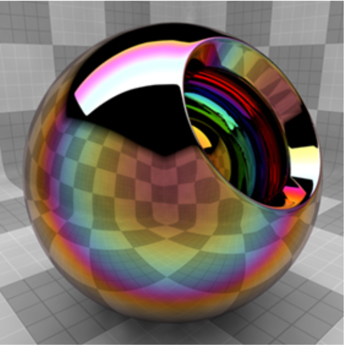
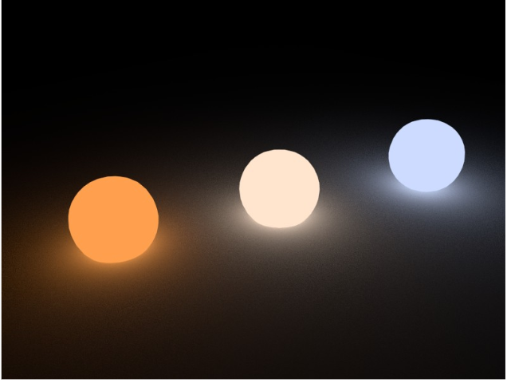
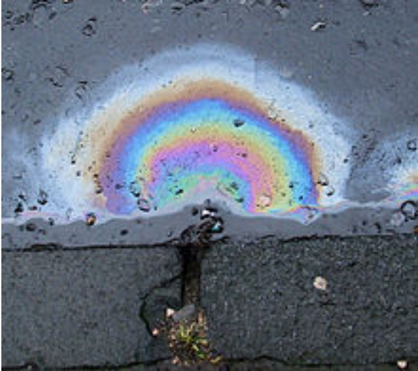

Iridescent Rendering
Summary
Our goal is to build upon the path tracer we implemented in projects 3-1
and 3-2 and introduce the ability to render iridescent texture by
implementing thin film interference, which gradually changes color when
you observe from different angles. As a result, the rendering under our
implementation should reflect lights more realistically.
Team Members (Name, Student ID, Email, Github handle)
Joy Chang (3034782362, joychang02@berkeley.edu, joyyy26)
Evelyn Wu (3034524650, evelynpwu@berkeley.edu, evelynwu88)
Yuetian Tang (3034728516, tangyuetian1123@berkeley.edu, yuetiantang)
Yin Deng (3033647998, yindeng@berkeley.edu, yinxudeng)
Problem Description
Iridescence is a very common visual effect as we can see lights
interacting with CD’s or bubbles in a colorful way. In this project, we
aim to build on top of project 3 to support iridescent rendering. It may
be hard to initially wrap your head around the notion of interpreting
light as waves instead of particles. We attempt to accomplish this by
implementing thin film interference and accounting for lights with
different wavelengths as if objects were covered in thin films. We also
need to account for both the amount of light rays reflected off the thin
film and the amount transmitted into the internal medium.
Goals and Deliverables
What We Want to Deliver
None of us did project 3-2 part 2, so our first deliverable would be to
implement multifacet material.
Render images with iridescent effect, mainly for objects covered in a thin
film. We want to achieve something like this:

Render images with black body radiation which accounts for lights with
different temperature. We want to achieve something like this:

What We Hope to Achieve
We hope that after implementing iridescence, we can render oil slick or
soap bubble, which can have different colors depending on the angle of
view. We want to achieve something like this:

Schedule
Week 1
Finish Project 3-2 part 2
Refactor code to account for lights with different wavelengths
Week 2
Finish as much of iridescent rendering as possible
Week 3
Finish iridescent rendering
Finish black body radiation
Week 4
Work on rendering oil slick/soap bubble
Resources
https://sydnie-shea.github.io/iridescentFinal/
https://gamedev.net/tutorials/_/technical/graphics-programming-and-theory/thin-film-interference-for-computer-graphics-r2962/